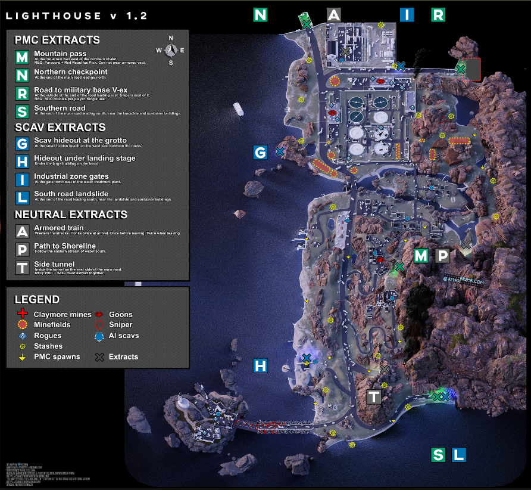

Lighthouse
El faro del cabo Dalniy fue un sitio estratégico clave en el camino a Tarkov durante las Guerras de Contrato, sirviendo como la principal zona de aterrizaje y base de operaciones para las unidades de la USEC. Tras el conflicto, Scavs y los propietarios originales, que eligieron quedarse en Tarkov, reclamaron esta zona.
Enlace video extracciones:
Enlace 